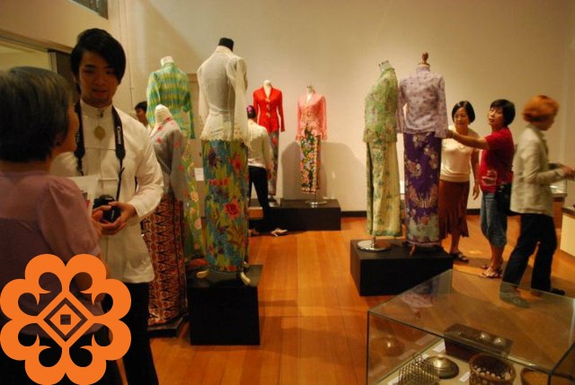

Saindera Gallery
The Saindera Gallery serves as a temporary exhibition space for special and periodic displays,
as well as activities such as textile talks and fashion shows.
It also accommodates various events organized by the museum and the public.

Exit